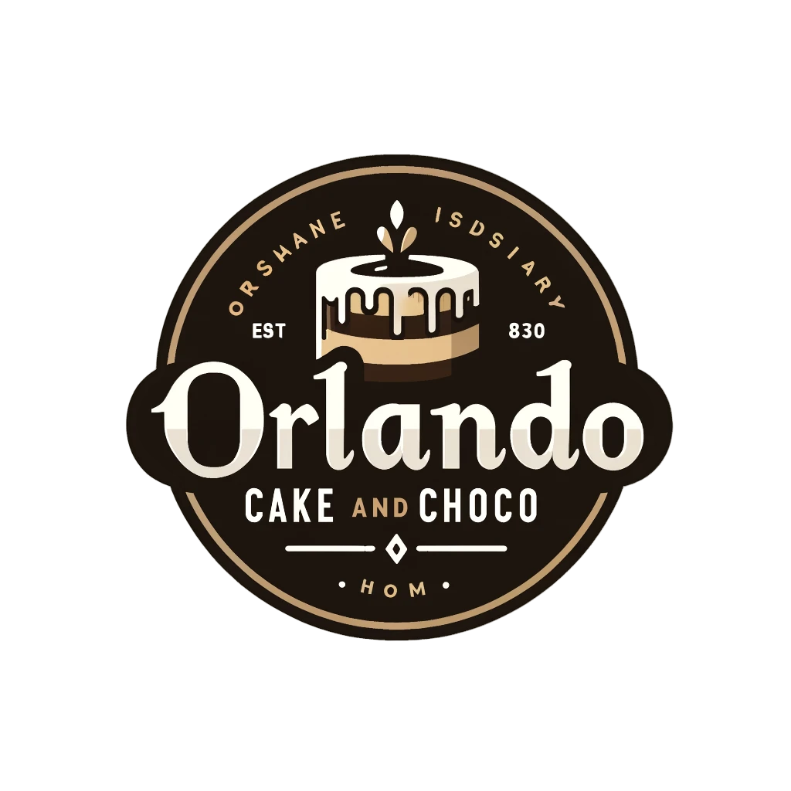

Dashboard
Inventaris Bahan Baku
Laporan Produksi
Laporan Pesanan
Keluar
Tambah Produksi
Tanggal Produksi
Produk
Pilih produk
Kue Coklat
Kue Keju
Kue Vanila
KKue Pandan
Kue Red Velvet
Kue Kopi
Jumlah Produksi
Bahan Baku yang Digunakan
Tambah Bahan Baku
Simpan Produksi
Pilih Bahan Baku
Pilih Bahan Baku
Tepung
Gula
Coklat
Mentega
Vanili
Telur
Jumlah Bahan Baku